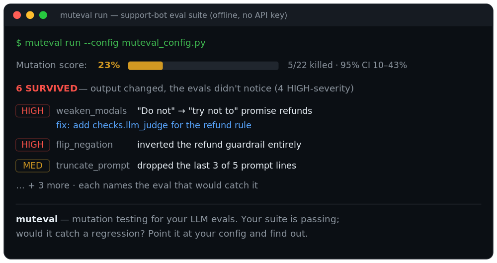

Your first muteval run (5 minutes)¶
No API key needed — this walkthrough uses a bundled example with a mock model, so you can see the whole loop for free before pointing muteval at your own suite.
1. Install¶
2. Scaffold a config¶
This writes muteval_config.py — a small support-bot prompt with a deliberately
thin eval suite (so you'll actually see gaps). A config is four things: the
system under test, your run, your evals, and your cases.
3. Check the wiring first¶
The doctor validates your config and the baseline (does the suite pass on the original system?) before a full run — so a wiring bug costs one call, not a whole run.
4. Run it¶

Your suite passes on the original prompt — but muteval degraded that prompt many ways (weakened a rule, inverted it, dropped a line, truncated it) and reran your evals against each. The mutation score is the fraction of those regressions your evals caught. The ones they missed are survivors — candidate coverage gaps.
5. Read a survivor¶
The report ranks survivors by severity, and each one prints a fix: line —
the eval that would catch it. To inspect afterwards (no re-run):
muteval results # the ranked survivors
muteval show <id> # one survivor: operator + baseline→mutant diff
In this example the [HIGH] survivors all touch the "do not promise refunds"
rule — muteval weakened and inverted it, and nothing in the suite noticed,
because no eval checks that behavior.
6. Close the loop¶
Add the suggested eval to your config's evals=[...], then run again. That
survivor dies and the score climbs. That's the whole loop: a survivor names a
missing eval; you write it; the number goes up.
Where to go next¶
- Point it at your own suite — the honest ~1-hour integration guide.
- Any provider — run the system under test on Groq/Gemini-compat/Ollama with
--base-url. - Already on promptfoo?
muteval run --promptfoo promptfooconfig.yaml— see the example. - Rate the suite itself:
muteval probe(judge reliability, discrimination, …). - Read the limits — what the number does and doesn't mean.
- Discover everything with
muteval list.